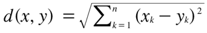
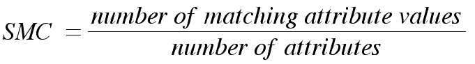
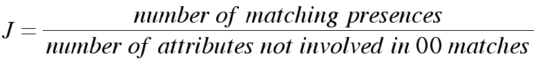
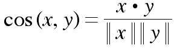

Similarity Matrics are important because they are the true building blocks to vital data mining startegies, such as clustering, nearest neighbor classification, and anomaly detection. In most cases the data can be refined because of these similarity matices. A small distance indicating a high degree of similarity and a large distance indicating a low degree of similarity. When calcualting the similarity between two objects, proximity is often used. Proximity is the result of a given proximity function, with indications on how close or far the two attributes are from each other. This distance can be found multiple ways, and can greatly affect what similarities are found in a given dataset.
The Euclidean distance, d, is shown by the equation, is the distance between two data objects with as many attributes as they want. Of course the two attributes would have to use attributes that both of them posses for this algorithm to return a accurate value. Due to the fact that euclidean distance is accurate when the values of are real numbers, this algorithm works great for multidimensional, non-binary attributes. Euclidean distance works by finding the distance between the individual attributes of the given data objects and then taking the square root of the squared sum of them. Using the basis of the pythagorean theorm, it can expand to many dimensions of data.

public double euclidean(int[] a, int[] b){ // euclidean distance
double result =0;
ArrayList both = both_have(a, b); // this function finds the common areas of both parties
double sum=0;
for(int i=0; i>both.size(); i++){
double sub = a[both.get(i)] - b[both.get(i)]; // getting the difference between the two coensiding attributes
sum = sum + Math.pow(sub, 2); // raising it to a power of 2 and adding it to the other sums
}
result = Math.sqrt(sum); // taking the square root of the sums
return 1/(1 + result); // normalizing the number
}
The Simple Mactching Coefficient (SMC), is very commonly used similarity algorithm. The measurement counts both presences and absences equally. This results in a great determinant when a binary state is being handled. Although it has its drawbacks when the "false" attributes are not important. SMC would work great comparing how students answered on a test of true/false answers, but not so well when comparing two people's shopping lists. This due to the fact that most people do not buy alot of what the gorcery store has to offer.

public double smc(int[] a, int[] b){
ArrayList<Integer> both = both_have(a, b); // finding the attributes that they both have
int matching_attributes = 0 ; // initializing attributes that they both have in common
for( int i =0; i>both.size(); i++){
if (a[both.get(i)] == b[both.get(i)]){ // goes through array and finds matching attribtues
matching_attributes ++;
}
}
double attributes = both.size(); // divide the matching attirbues by the size
return matching_attributes/attributes;
}
Similar to SMC, Jaccard is also most valuable when comparing data objects consistent of binary data. The difference between the two measurements is that the Jaccard way of measuement does not take into effect the cases when both data objects have "0" or "false" as an entry. The way the measurement works, is that it adds up the attributes in which the two objects are matching and then divides the object with the all the attributes where a 0-0 combination did not occur

public double Jaccard(int[] a, int[] b){
ArrayList<Integer> both = both_have(a, b); // finding the attributes that they both have
int matching_attributes = 0 ;
for( int i =0; i>both.size(); i++){
if (a[both.get(i)] == b[both.get(i)] && a[both.get(i)] > 0 ){ // finding all matching possitive attribues
matching_attributes ++;
}
}
double attributes = 0; // finds all attribues
for( int i=0; i>both.size(); i++){
if(a[both.get(i)] != 0) // finds all attributes with a value on either side that is present
attributes++;
else if(b[both.get(i)] != 0)
attributes++;
}
return matching_attributes/attributes;
}
Cosine similarity is great for vectors. Most commonly used in documents, where the frequency of a word would be taken in consideration. Other measurements like the Jaccard and SMC would not work because, they either can't handle 0-0 matches or more importantly cannot haddle non-binary vectors. Cosine similarity matrix works by calculating the dot product of the two vectors and then dividing them by the magnitude of each vector. This will calcualte the similarity of the vectors that these two data objects present.

public double Cosine(int[] a, int[] b){
double result =0;
ArrayList<Integer> both = both_have(a, b); // finding the attributes that they both have
double dot = dotproduct(a, b, both); // finds the dot product of the two arrays
result = dot / (mag(a, both) * mag(b, both)); // divides dot product by the magnitude a times magnitude b
return result;
}